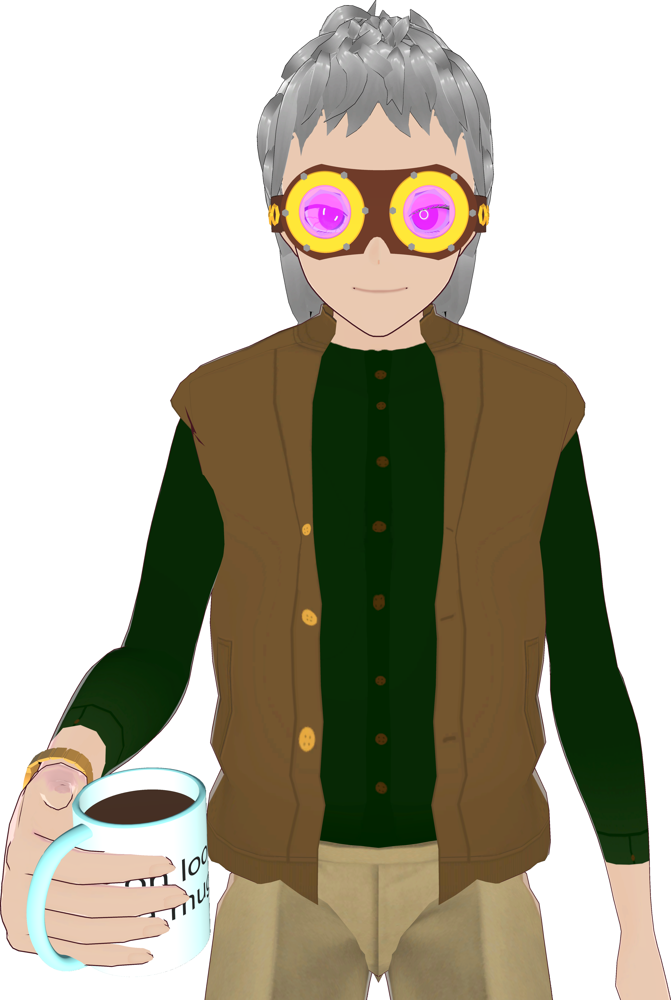

Axiom Ostanes, a thaumaturgic engineer vtuber.
YouTube
Discord
Twitter (Deprecated because muskrat's BS)
Twitch (not currently used)
Lore
I'm from the late 1800s of a timeline where magic was discovered by the world at large a few years into the industrial revolution. The natural philosophers of the world eagerly analyzed this newly-confirmed force, and the fruits of their labor, a way of using magic scientifically, came to be known as thaumaturgy. I'm personally not very good at thaumaturgic spellcasting, but I'm quite adept at integrating the relevant principles into devices, such as my goggles, which allow me to perceive a wider section of the EM spectrum, as well as magical energy. The main differences between traditional magic (which was hidden from the world for a long time) and thaumaturgy are as follows: 1. Thaumaturgic spellcasting is far faster to activate than most forms of traditional casting, owing to the refinement of the technique to remove unnecessary actions. 2. Some things that traditional magic can do, such as teleportation of macroscopic objects, are currently inaccessible to thaumaturges, as they have not yet been successfully reverse-engineered. 3. Traditional magic is easier to learn for those with aptitude, but usually those without will never manage to produce more than a few sparks even after years of study. This aptitude is very poorly-understood, aside from the fact that it seems to be determined at birth based on one's heritage. 4. Conversely, thaumaturgy is very difficult to learn, due to the extremely precise vocalizations and movements required, but it seems to be the roughly the same difficulty to all who attempt it, though it's still a skill like any other that some people are simply more or less suited to. Soft lore: These are a few things I said on social media without too much thought, they should be thought of as only semi-canon: 1. My blood is full of magic nanites that attack anything that tries to take my blood without permission 2. I have a magic angle grinder